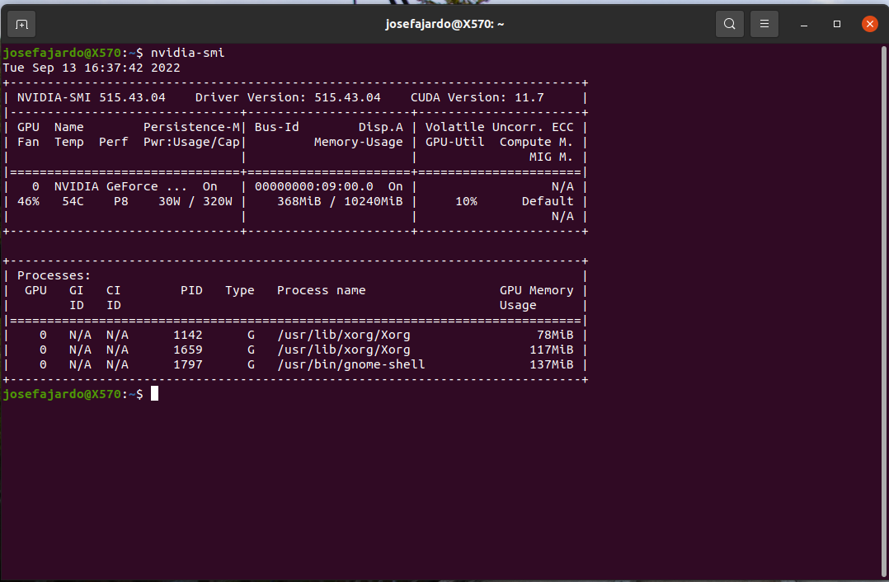

Installation
SAPPC have been only tested in Ubuntu 20.04, althought it may work in other OS its performance have not been tested in other OS.
Download Ubuntu
Download ubuntu 20.04 from the link (Link viewed 13 Sept 2022)
Create a bootable USB following the instructions found in the next link:
Install Ubuntu 20.04 in the computer with the following options:
After installation of the OS, reboot the computer, open a terminal, and execute the following commands:
sudo apt update sudo apt upgrade
Reboot the computer.
{kind=link}
Remove previous installations of CUDA and Nvidia Driver
Search the “Software-updater” application using the search bar in the menu “Show applications” (Icon in grey):
Click on settings:
Click on the “Additional Drivers” option in the top bar:
Check that the option “X.Org X Server” is checked. If not the click on the “X.Org X Server” option and click “Apply Changes”.
Reboot the computer.
Delete all previous files of Nvidia Drivers using the commands:
sudo apt-get --purge remove "*cublas*" "cuda*" "nsight*" sudo apt-get --purge remove "*nvidia*" sudo rm -rf /usr/local/cuda* sudo /usr/bin/nvidia-uninstall sudo apt-get --purge remove "*nvidia*" sudo apt-get --purge remove "*cublas*" "cuda*" "nsight*"
Reboot the computer.
Check that the “X.Org X Server” option in cliked in the “Additional Drivers” tab of the Software-updater application.
{kind=link}
{kind=link}
{kind=link}
Installation of CUDA Toolkit and Nvidia Driver
Install the Nvidia CUDA Toolkit version 11.7 following the instructions in:
Or using the following commands:
cd ~/Downloads wget https://developer.download.nvidia.com/compute/cuda/repos/ubuntu2004/x86_64/cuda-ubuntu2004.pin sudo mv cuda-ubuntu2004.pin /etc/apt/preferences.d/cuda-repository-pin-600 wget https://developer.download.nvidia.com/compute/cuda/11.7.0/local_installers/cuda-repo-ubuntu2004-11-7-local_11.7.0-515.43.04-1_amd64.deb sudo dpkg -i cuda-repo-ubuntu2004-11-7-local_11.7.0-515.43.04-1_amd64.deb sudo cp /var/cuda-repo-ubuntu2004-11-7-local/cuda-*-keyring.gpg /usr/share/keyrings/ sudo apt-get update sudo apt-get -y install cudaReboot the computer.
Add the lines pointing to the Cuda Toolkit to the file “~/.bashrc”. To open the file use the command:
Close the terminal and open a new one. In the new terminal check the version of the Nvidia Driver and CUDA toolkit using the following commands:
nvidia-smi nvcc --version
Download the Nvidia CUDA Toolkit version 11.4.2 (runfile) using the command
cd ~/Downloads wget https://developer.download.nvidia.com/compute/cuda/11.4.2/local_installers/cuda_11.4.2_470.57.02_linux.runOr use the command found in the next link:
Install the Nvidia CUDA Toolkit version 11.4.2 using the command:
sudo sh cuda_11.4.2_470.57.02_linux.run --silent --toolkit --toolkitpath=/usr/local/cuda-11.4Create the symbolic links that point to the Nvidia CUDA Toolkit version 11.4.2 using the command
sudo ln -s /usr/local/cuda-11.4/ /usr/local/cuda sudo ln -s /usr/local/cuda-11.4/ /usr/local/cuda-11
Note
If the files (symbolic links) already exist, then delete them using the commands:
sudo rm /usr/local/cuda sudo rm /usr/local/cuda-11
Add the following lines to the end of the file “~/.bashrc”:
# Nvidia path export CUDA_HOME=/usr/local/cuda-11.4 export PATH=/usr/local/cuda-11.4/bin:$PATH export LD_LIBRARY_PATH=/usr/local/cuda-11.4/lib64:/usr/local/cuda-11.4/extras/CUPTI/lib64:$LD_LIBRARY_PATH
Note
Delete the line “export PATH=/usr/local/cuda/bin:$PATH” created when installing the Cuda Toolkit 11.7.
Reboot the computer.
Check that the CUDA Toolkit being used is the 11.4 using the command:
nvcc --version
{kind=link}
{kind=link}
{kind=link}
{kind=link}
Install OpenCV
Install the build tools and dependencies using the following commands:
sudo apt install build-essential cmake git pkg-config libgtk-3-dev \ libavcodec-dev libavformat-dev libswscale-dev libv4l-dev \ libxvidcore-dev libx264-dev libjpeg-dev libpng-dev libtiff-dev \ gfortran openexr libatlas-base-dev python3-dev python3-numpy \ libtbb2 libtbb-dev libdc1394-22-dev libopenexr-dev \ libgstreamer-plugins-base1.0-dev libgstreamer1.0-dev sudo apt install libeigen3-dev sudo apt install cmake-curses-gui sudo apt install cmake-qt-gui
Clone the OpenCV and OpenCV contrib repositories using the commands:
mkdir ~/opencv_build && cd ~/opencv_build git clone https://github.com/opencv/opencv.git git clone https://github.com/opencv/opencv_contrib.git
Once done, create a temporary build directory and navigate to it:
cd ~/opencv_build/opencv mkdir -p build && cd build
Set up the OpenCV build with CMake using the following command:
cmake -D CMAKE_BUILD_TYPE=RELEASE \ -D CMAKE_INSTALL_PREFIX=/usr/local \ -D INSTALL_C_EXAMPLES=ON \ -D INSTALL_PYTHON_EXAMPLES=ON \ -D OPENCV_GENERATE_PKGCONFIG=ON \ -D OPENCV_EXTRA_MODULES_PATH=~/opencv_build/opencv_contrib/modules \ -D BUILD_EXAMPLES=ON .. -D OPENCV_GENERATE_PKGCONFIG=YES
Compile the library with the command:
make -j8
Note
The number of cores used in the compilation can be changed by replacing the number 8 with the number of cores of the computer.
Install the library using the command:
sudo make install sudo ldconfig
Add the path of the installation to the OS path in the ~/.bashrc. To open the file use the following command:
gedit ~/.bashrc
At the end of the file add the following lines:
# Python Site-packages export PYTHONPATH=/usr/local/lib/python3.8/site-packages/:$PYTHON_PATH export PATH=/usr/local/lib/python3.8/site-packages/:$PATH # Link to libraries export LD_LIBRARY_PATH=/lib:/usr/lib:/usr/local/lib:$LD_LIBRARY_PATH
Reboot the computer.
In order to verify, type the following commands.
{kind=link}
{kind=link}
Install PyTorch and TorchVision
Download Pytorch version 1.10.0 and TorchVision version 0.11.1 using the commands:
cd ~ git clone -b 'v1.10.0' --single-branch --depth 1 https://github.com/pytorch/pytorch git clone -b 'v0.11.1' --single-branch --depth 1 https://github.com/pytorch/vision
Before installing it is needed to give permissions to the installation folder, use the following command, replacing “$USER” with the user in the computer:
sudo chown -R $USER /usr/local/lib/python3.8/dist-packages/ sudo chown -R $USER /usr/local/bin/
Note
Don’t forget to replace the $USER with the user in the computer.
Install Pytorch using the commands:
cd ~/pytorch sudo apt install python3-pip python3 -m pip install setuptools python3 -m pip install typing_extensions python3 setup.py installInstall TorchVision using the commands:
cd ~/vision python3 setup.py installReboot the computer.
In order to verify, type the following commands.
{kind=link}
Clone ANSV repository
Clone the repository using the command:
cd ~ git clone https://github.com/jmfajardod/ansv_componente_3.git -b develop --depth 1
Compile C++ programs for data acquisition
To compile the programs written in C++ for the cameras data acquisition use the following commands:
cd ~/ansv_componente_3/Pista/Vision/Data_acquisition/ mkdir build && cd build cmake .. make
Install conditional-lane detection repo
Clone the Conditional-Lane-Detection repo using the command:
cd ~ git clone https://github.com/jmfajardod/conditional-lane-detection.gitInstall the requirements using the command:
cd ~/conditional-lane-detection python3 -m pip install -r requirements/build.txtCompile the repo using the command:
python3 setup.py develop
Copy (Merge and Replace) the mmdet folder from the conditional-lane-detection repo to the ansv_componente_3/Vehiculos/Automovil_circulacion/Vision/Lane_detection/ folder and the ansv_componente_3/Vehiculos/Motocicleta_circulacion/Vision/Lane_detection/ folder.
Download trained models
Lane detection Model
Download the curvelanes_medium.pth model using the following link:
Put the download model in the ansv_componente_3/Vehiculos/Automovil_circulacion/Vision/Lane_detection/models folder and the ansv_componente_3/Vehiculos/Motocicleta_circulacion/Vision/Lane_detection/models folder.
Note
The models folder needs to be created inside the Lane_detection folder.
Traffic Light Detection Model
Download the “best_model.pth” file from Google Drive:
Then paste the model in the ansv_componente_3/Vehiculos/Automovil_circulacion/Vision/Traffic_light_recognition/ folder and the ansv_componente_3/Vehiculos/Motocicleta_circulacion/Vision/Traffic_light_recognition/ folder.
Optical Flow Model
Download the RAFT models from the google drive of the authors using the following link, the file that is needed is called “raft-small.pth”.
Then paste the download model in the folder ansv_componente_3/Pista/Vision/Motorcycle_algorithms/RAFT/models/.
Note
The models folder needs to be created inside the RAFT folder.
Install computer vision requeriments
Install the requeriments using the following commands:
cd ~/ansv_componente_3/docs/ python3 -m pip install -r requirements_vision.txt
Compile documentation
Install the requeriments to compile the documentation using the following command:
cd ~/ansv_componente_3/docs/ make htmlCompile the documentation using the following command:
cd ~/ansv_componente_3/docs/ make htmlNote
If you want to build each time a file is changed:
cd ~/ansv_componente_3/docs/ sphinx-autobuild . _build/html